媒介
商业厚涂，不是赛璐璐。线细到常被颜色吃掉。形靠明暗、体积、材质高光。皮肤有次表面，皮革是条状高光，金属是硬点，纱是透叠。
这是设计手册的 UI 模块。数值 / 动效 / 图鉴走顶栏。这份图鉴把本地 2671 张竖屏截图、头像库、GameKee 攻略 和战斗重建规格收成一页。学的是语法：厚涂全身、暗金界面、五人头像上的 Tap / Slide / Drive / Fever。原作脸、Logo、S CLASS、具体剪影不进发行资源。


血统：SHIFT UP，导演兼角色设计金亨泰。Live2D CS 写死了——原画是厚涂全身，再切网格。头发根部与发梢至少两套参数。站着呼吸，浮着失重。同一条河的下游是 NIKKE 和剑星：身体即设计，时装即世界观。
商业厚涂，不是赛璐璐。线细到常被颜色吃掉。形靠明暗、体积、材质高光。皮肤有次表面，皮革是条状高光，金属是硬点，纱是透叠。
一张海报 = 从头到鞋。7.5–8.5 头身，长腿、对侧站。手必须做事：持武器、提包、扶车、举杖。Home / 详情 / 图库全部是全身，圆框胸像只给列表。
神话名穿成当代衣服。先写碰撞再画：夜巡神偷 × 束带白裙和步枪箱。头发是第一图形，发量经常超过躯干，衣服可以很黑，头发负责彩度。


详情页可横滑切角色（101_char_swipe_*）。复刻时先画三张原创过关：一张暗奢、一张日常、一张非人。

成人向商业插画脸：眼距近、鼻用高光、虹膜多层 + 两颗捕光。即使「学院」也有妆。裁切是下巴到头顶、肩膀切一刀。5★ 左上属性菱形 + 金星闪；框色 = 属性。
High-end Korean mobile-game character illustration, thick painterly full-body, fashion-fantasy, adult fashion-model proportions, huge graphic hair with cinematic rim light, peach skin with warm subsurface scattering, thin almost-lost linework, costume is a high-fashion mashup of modern clothing and occult ornament, standing on a dark perspective checkerboard in a near-black void, sparse orange ember motes, warm key light from upper left, character is the only light source, Live2D-ready clear silhouette.
每张另加一句「概念 × 时装类型」。手要抓住道具。无文字、无 Logo。
同一产品里至少有六种画。主界面用全身，列表用头像，魂卡用场景，人偶用 Q 版。串种一看就是外服换皮。

首页 / 详情 / 图库。厚涂全身、透视棋盘、火星、字压在腿上。角色占屏高 70–80%。图库模式把铬剥光，只剩人和棋盘。

编队是高竖条 + 头顶网点溶解。图鉴是圆角方砖、属性色框、6 列窄缝。空砖用水印（心 / 颅 / 火），不是白板。

角色走进有环境的画面，不是虚空。竖构图、银纹框、虹彩膜。气质是塔罗封面，比 Presenter 更叙事。

大头短身，服装配色继承本尊，金玫瑰巴洛克框。仍是厚涂小雕像，不是贴纸 Q 版。不要把人偶放大当首页。

史莱姆、方块、金币、动物。这是养成饲料语言。主力角色必须按 5★ Presenter 预算画，不要用这一档的简化法。
印刷平面，不是 Material。虚线分隔、金线细框、胶囊确认钮浮在面板下面。模态要透出后面的角色。六页签只出现在首页和编队。
字从约 60–65% 屏高开始。名字必须厚黑描边，否则会死在头发上。


只在首页和编队。详情、模态、温泉、图鉴、图书馆、夏娃都拿掉。选中：亮金 + 白字 + 径向光。闲置：古董金 #CF9403。图标要重绘，不要描原作剪影。
永远在右上，从不是汉堡菜单。首页是深色六边形图标；详情是白线图标 + 中文标签。X 永远在最顶。眼睛斜杠 = 剥铬看画。
75% 黑遮罩，角色仍隐约可见。圆角暗面板约 80–90% 宽。金线细框。虚线分隔。确认胶囊脱离面板、居中浮在下方。NOTICE 是短变体：金标题 + 一句 + (i)。
纯黑清场 #000。透视棋盘：深 #101012 × 浅蓝灰 #2A2934，不是棕木地板。格子大，向灭点缩小，底部重暗角。空气里稀疏橙金火星，有的在人前面、有的在后面。躯干后一团暖光，没有它就像漏装天空盒。
底 #121212。扁平 45° 菱形砖 + 心 / 星 / 100 水印。编队、图鉴用这一套。MVP 可以去掉水印，但必须保留菱形或棋盘，禁止一块死灰 #333。
未标注的 hex 来自 1200×2670 截图像素。三种黄不要塌成一种。光属性金必须比「选中金」暗，否则光角色看起来像被选中。
已复制到剪贴板
確認 取消 重置
ONOFF Live2D 动作 · 低画质
黄 = 前进 / 已装备 / 确认。灰 = 闲置。红橙 = 双钮里的取消。三钮 NOTICE 可以全是黄，层级靠位置和文案。
| T1 名 | 42–52px 白 + 厚黑边 |
|---|---|
| T2 值 | 36–48px 压缩黄字 · 每屏一颗英雄数字 |
| T3 属性 | 28–34px 白 · 左标签右数字 |
| T4 标签 | 18–22px 闲置金 / 槽位灰 |
| T5 台词 | 16–18px 次级灰 · 最多两行 |
| T6 微 | 12–16px TIER LV E P U |
CJK 正文 + 压缩拉丁数字。技能标题可走黄→橙渐变 + 描边 + 微光，像 SKILL INFORMATION 那种英文锁字。

装备：金属静物小图 + 品级字母 SSA / S / SS / AA。空槽是深井 + 浅灰线稿，不是 Unity 默认「No Item」。点空槽弹出 NOTICE「未装备任何物品」，纪念版没有背包。
高圆底矩形。头顶网点溶解。左下 LV，黄 +N，竖排红星，属性盘 + 职业盘。选中：更高、金框、蜂巢金条 + 下箭头连到信息条。LEADER 是黑底白字 + 白虚线框，不是金横幅。
左金属圈标：DEFAULT / NORMAL / SLIDE / DRIVE / LEADER。名称 + 黄 TIER/LV。描述里只有关键词和数字用黄。虚线分隔。预约是五个 E 圆，点线连接，可标 T 或 S。Drive 不是预约筹码。
属性拥有彩边。职业是白剪影 + 深色圆盘：剑 / 盾 / 颅 / 十字 / 翼。不要再发明第二套彩虹去打架。MVP 用形状区分即可。
纪念版客户端没有战斗。下面先放运营期真机图（国际服 wiki「游戏系统介绍」、韩服 Raid/WB/PVP、日服萌新指北），再对照日服攻略编号 HUD 和现有 BattleSim。核心仍是一分钟：五个人在自动打，头像充好点或上滑，Drive 时机判定，Fever 窗口爽完。
顶：敌人状态 / 波次 / 计时 / 敌 Drive。中：战场（人不要被 UI 盖住）。底：五人头像是唯一技能控件。点 = Tap，按住上滑 = Slide。Drive 是全队共享槽，不是第五个头像技能。
GOOD BUTTON，不是横条。Perfect = 伤害 150% + Fever 增量。下面横条示意仅表示判定档，复刻用圆钮。| 判定 | 伤害 | Fever |
|---|---|---|
| Bad | ×0.90 | +8 |
| Good | ×1.00 | +15 |
| Great | ×1.20 | +30 |
| Perfect | ×1.50 | +40 |
火克木 木克水 水克火
光与暗互克
| 无暴 | 暴击 | |
|---|---|---|
| 克制 | 1.4 | 2.4 |
| 普通 | 1.0 | 2.0 |
| 被克 | 0.7 | 1.7 |
来自 GameKee 玩家实测，不是官方源码。MVP 按此重建。
| 攻击 | 单体 / 多段 / 爆发 |
|---|---|
| 防御 | 挑衅、屏障、减伤 |
| 干扰 | 毒、出血、晕、降防 |
| 治疗 | 瞬回、持续、起死 |
| 辅助 | 加速充能、加攻、驱散 |
充能参考间隔：辅助 7.5s 最快，攻击/治疗约 9s。队伍 5 人，一名队长，同名不上两份。
| DEFAULT | AUTO 普攻 |
|---|---|
| NORMAL | TAP |
| SLIDE | 上滑 |
| DRIVE | 全队爆发 |
| LEADER | 上场就挂的光环 |
成长改的是技能等级、突破档、后期 Ignition 文本，不是另开一棵树。面板五项：HP ATK DEF AGL CRT。CRT 是暴击率，不是暴伤。
来源：GameKee 国际服「游戏系统介绍」长图裁切。黄签是攻略组标注，不是原作 UI。
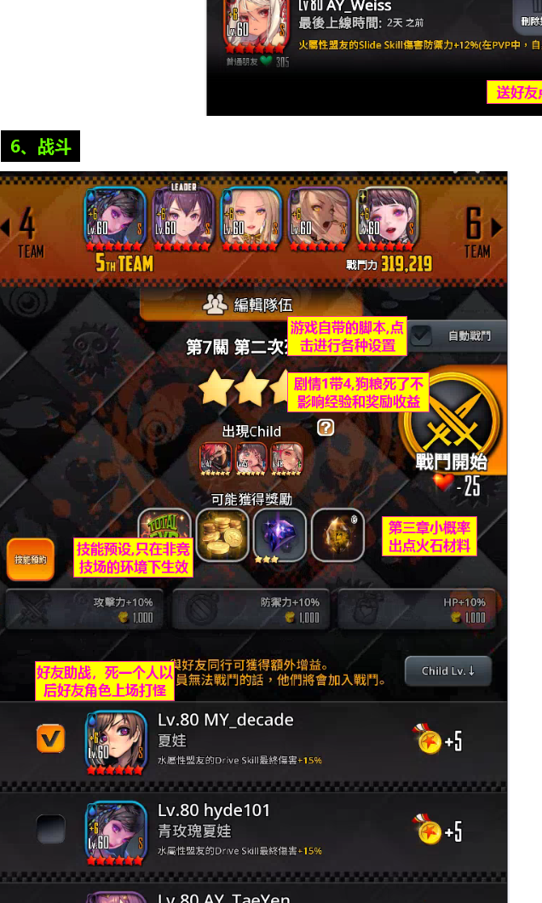
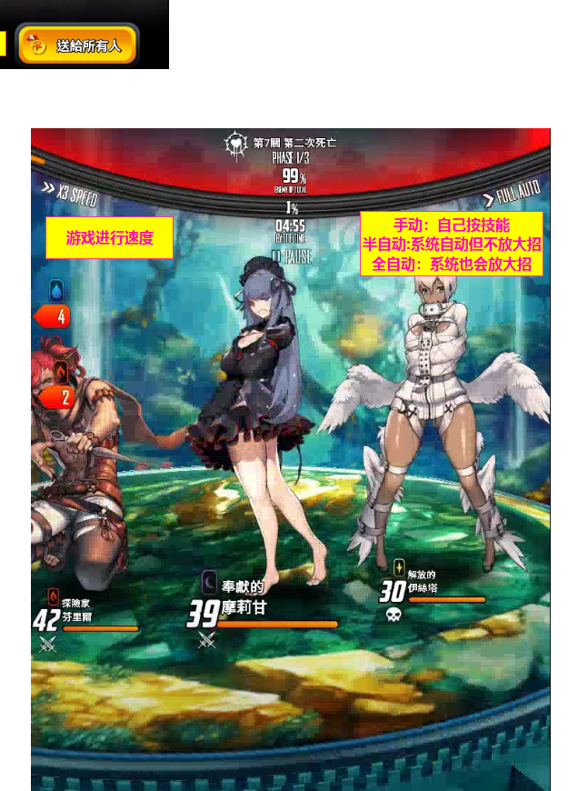
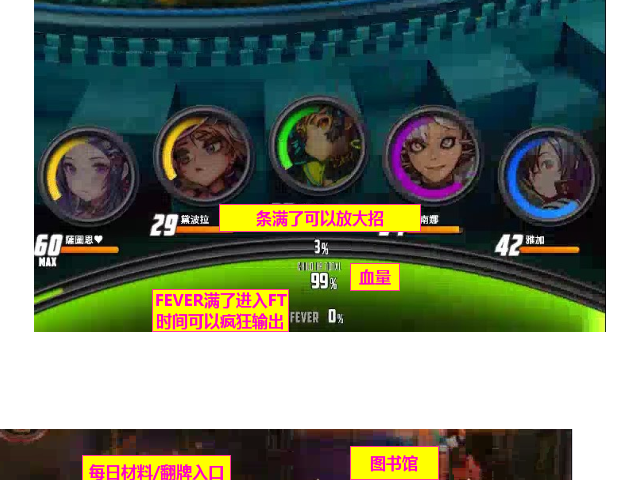
Home 是全身 Live2D 海报。进战斗后角色变成站在圆形石台上的战斗体：有脚底接触、头顶/脚下血条数字、属性小标。背景是关卡画的场景（森林、地牢、Boss 舞台），不是黑棋盘。顶条：关卡名、PHASE、敌方总血%、倒计时、x2/x3 SPEED、FULL AUTO / 半自动 / 暂停。
日服 GameNext 把 HUD 编成 8 号：①敌信息 ②倍速 ③剩余时间 ④自动 ⑤技能环 ⑥Slide 冷却 ⑦Drive 钮 ⑧我方 Drive / Fever / 总 HP。和上面裁切对得上。
五个圆头像（不是编队竖条）。环是充能色：黄/绿满了就能 Tap 或上滑 Slide。头像下是短名 + HP 数字。正中是全队血条、DRIVE、FEVER。Fever 满了进 FT，攻略标注「可以疯狂输出」——窗口里技能冷却放开，不是切到另一套 UI。
自动分三档：手动按技能；半自动普攻/Tap 但不放 Drive；全自动连 Drive 也放。剧情狗粮可以全自动；Boss / WB / Raid 要自己抓 Drive 时机。
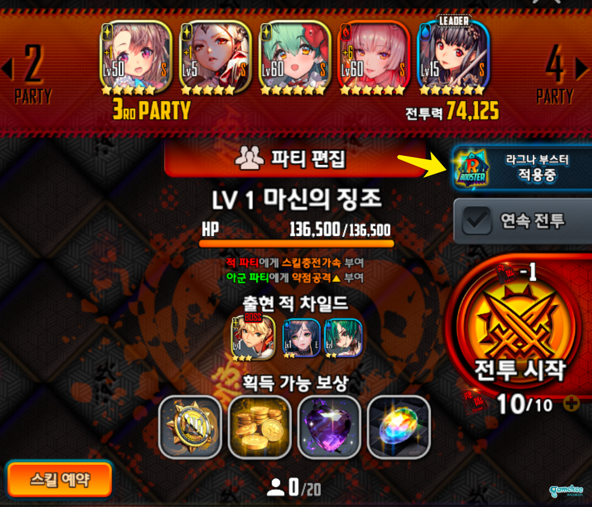
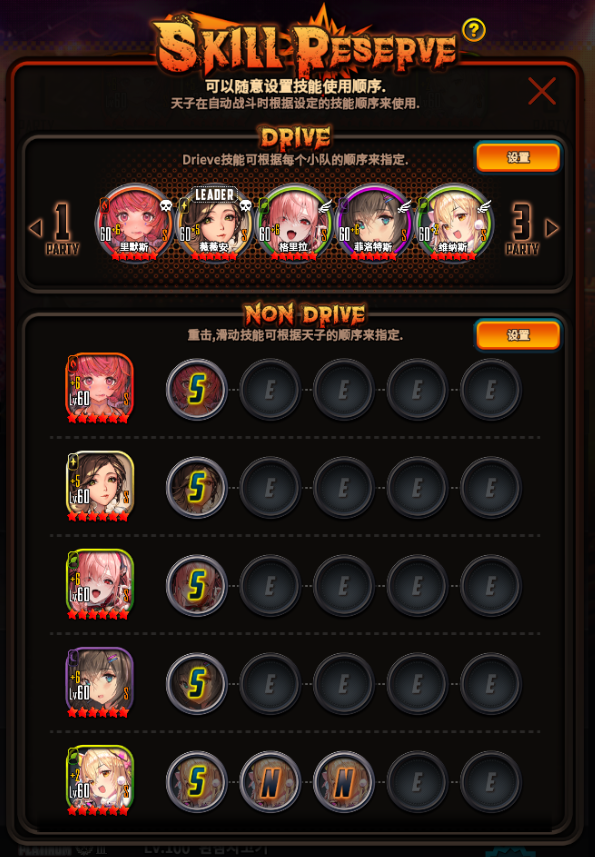
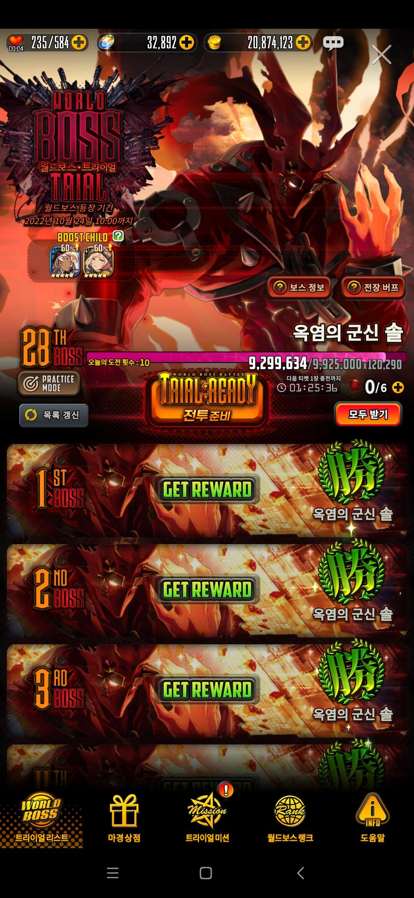
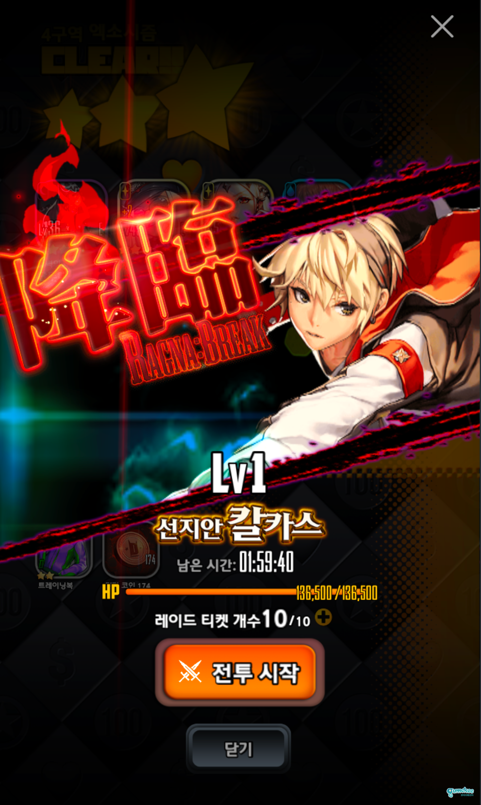
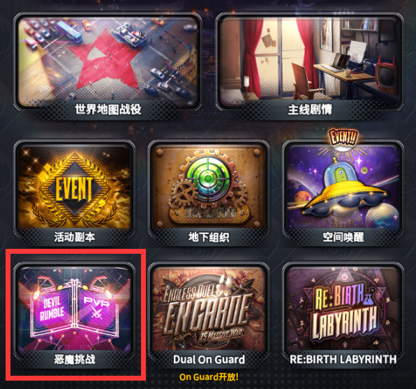
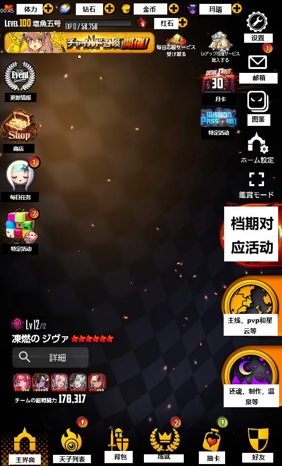
运营期 Home 顶栏是体力 / 钻石 / 金币 / 红石，底栏是主界面·天子·背包·成就·抽卡·好友。纪念版把 LiveOps 剥光，只剩人和六页签。复刻战斗时不要用纪念版 Home 去猜战场——战场是圆台 + 五圆头像，进战前是大金劍「戰鬥開始」，技能预约是 Drive 一排圆头 + 每人五个 N/S/E 槽。
模式入口也不是一张图：主线地图、活动本、地下组织 Underground、空间唤醒、Devil Rumble、Endless Duel、Re:Birth、Ragna Break、World Boss Trial。同一套战斗核，换的是大厅皮和队伍人数（常规 5 人，WB 最多 20）。
图：国际服 wiki 77671 / 22652 / 22411；韩服 53131 / 169159 / 164372 / 168406；日服 162007。录像对照 YouTube 官方操作教学、First Impressions 战斗段。日服编号 HUD：GameNext バトル操作。
YouTube 三支实战：国际服 Ragna:Break、韩服「Raid S12」（结算是 Ragna:Break）、世界王 100th。完整帧墙和 12fps 连拍在 战斗动效.html。普通主线只有 wiki 静帧；困难主线和星云这两支战场没有录像。
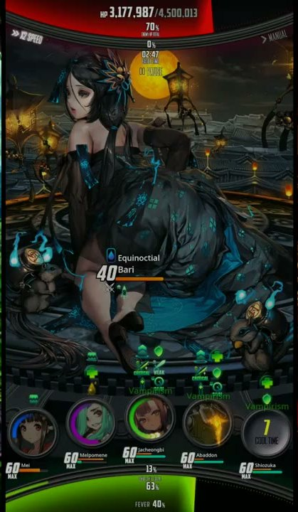
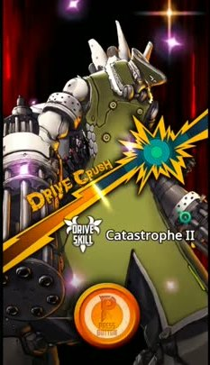
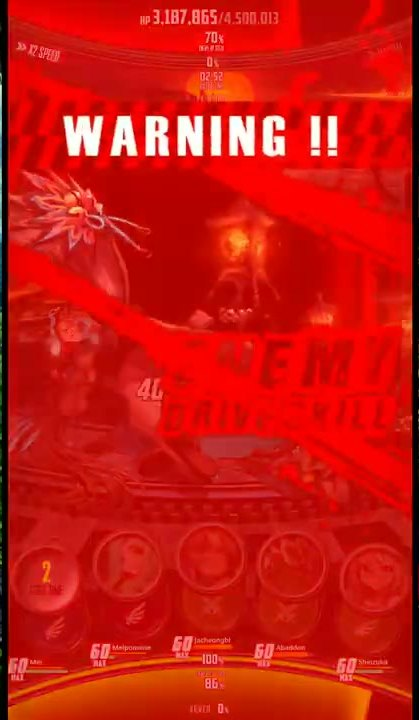
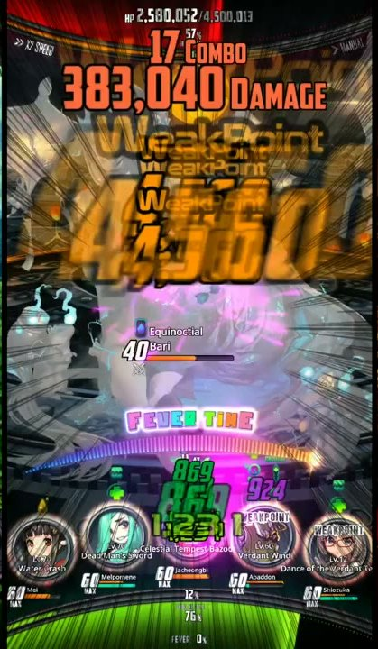
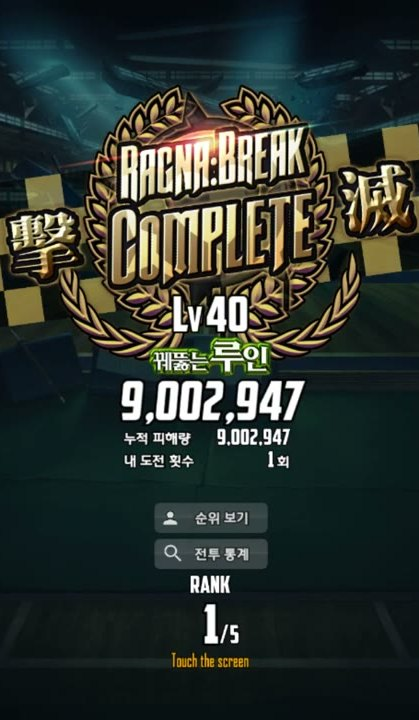
连拍条、模式对照表、数字分层：战斗动效.html。
常量永远是暗底 + 金控件。变的是舞台，不是按钮语言。P2 才做木雕胡桃，MVP 不要用雕刻家具冒充主界面。


厚涂风景：夕光、灯笼、松石水、蒸汽。角色是景中人，浮动名字 + 泡汤。右缘仍是深色圆钮。没有六页签。
木书架、金匾、故事卡肖像、魔女吉祥物半身。底栏换成 图书馆 / 主要 / 特别 / 觉醒 / 其他。这是剧情归档，不是战斗。
金丝藤蔓镜框 + 地牢瓷砖 + 豆人。人物缩小成迷宫棋子。GAME START 大金钮。无存档时用棕色状态句，不是黄错误。

图鉴顶栏：Child · 魂之歌牌 · 人偶 · 造型。造型 315 套证明：脸和发色锁身份，衣服锁活动。
| 等级 | 战斗或吞噬。1–60。3★ 帽 30 … 6★ 帽 60 |
|---|---|
| 进化 | 满级 + 同星素材 → 星 +1 → 等级回 1 |
| 突破 | 重复本体，+0 到 +6，抬属性和技能档 |
| 好感 / 觉醒 | E → S（Onyx）。数值 + 台词 + 个人剧 + S 外观 |
| 装备 | 武器 / 防具 / 饰品 / 魂卡（第四槽后期） |
没有暗黑式六格符文。路线是：三件装备 → 词条 → 魂卡 → Ignition。后两者不要塞进第一版。
| 必须 | 主线关、日常本（经验/进化/金）、战斗这一分钟 |
|---|---|
| P1 | 剧情活动模板、图鉴鉴赏、图书馆 |
| P2 | 地下城连续战、温泉、魂卡、异步 PVP、Raid |
| 不做首批 | 公会、20 人世界王、Ignition 终局 |
原作技术秘诀：系统很少，数据配置很多。活动不要每次重写程序。
| 页 | 顶 | 中 | 底 | 核心操作 |
|---|---|---|---|---|
| Home | 纪念版几乎空（无体力条） | Live2D 全身 | 六页签 | 看人、进内容 |
| 编队 | 5 槽 + LEADER | 竖条名册 | 六页签 | 点选 / 筛选 |
| 详情 | 右缘工具 | 全身 | 四槽 + 技能 | 横滑切人 |
| 战斗 | 敌人 / 计时 | 战场 | 五头像 + Drive | Tap / Slide / Drive |
| 图鉴 | 英文 LIBRARY 匾 | 6 列方砖 | 无六页签，用 X 回首页 | 筛选星级 |
1. Presenter 全身（9:16 / 9:19，透明或纯黑） 2. 1:1 方头像 3. 编队竖条（可从全身裁 + 网点） 4. 可选人偶 / 魂卡场景 / 一套换装
UI 色板不要重造，直接用本页 token。详细文字版：画风整理.md · VISUAL_LANGUAGE.md · 攻略 gamekee.com/dc
纪念版图鉴是 561 名天子（282+77+99+53+50）。下面是这张总表现在填了多少。空着的格子多数是截图当时没弹出面板，或 5★ 词条名 OCR 对不上 wiki，不是网页漏画。点头像看技能。
头像 282 · 属性 244 · 职业 195 · HP 184 · TS 201
头像 77 · 属性 68 · 职业 26 · HP 65 · TS 57
头像 98 · 属性 95 · 职业 37 · HP 48 · TS 0
头像 53 · 属性 50 · 职业 18 · HP 27 · TS 0
头像 50 · 属性 50 · 职业 17 · HP 21 · TS 0
魂卡 wiki 156 张齐。人偶 wiki 220 / 纪念版图鉴 232（差在低稀有度 wiki 没单独页）。完整可搜表格仍是 汇总表.html。
完整检索请用 图鉴模块。下面是纪念版全部 561 名的名字速览，不放头像。搜名字或筛属性/星级，点一条名字，底下弹出普攻 / TS / SS / DS / 队长技。伤害公式在 战斗与数值.html。部分名字乱码、技能里有 ||、CP/HP 空着，是纪念版截图 OCR 没认清。
卡面是场景插画，不是虚空全身。点图放大。
全部能力增加（普：250/350），被攻击时，恢复(普：190/210）HP
在PVP中装备时，攻击时回复300/325HP，有15/17%的几率移除增益
5人巨型boss，装备时暴击时的加成伤害增加（普：15%/；闪：17%/）
在5人巨型boss中装备时，skill量表充能速度增加（普：10%/；闪：11%/）
在5人巨型boss中，攻击时回复HP（普：300/；闪：325/）
装备时，在5人巨型boss中发动攻击时回复HP（普：300/；闪：325/）
装备时，在pvp中增加skill量表充能速度（普：5%/；闪：6%/）
装备时，在5人巨型boss中发动攻击时回复HP（普：300/；闪：325/）
在20人巨型boss时，装备时增加减益回避率（普：13%/；闪：15%/）
装备时，在PVE中持续伤害增加（普：250/；闪：300/）
装备时，在PVP中持续伤害减益回避率增加（普：15%/；闪：16%/）
装备时，在太空漫步中发动攻击时回复HP（普：300/；闪：325/）
在PVP中增加眩晕回避率（普：22%/；闪：23.5%/）
装备时，在20人巨型boss中减少诅咒伤害（普：150/；闪：170/）
装备时，在太空漫步中减益回避率增加（普：13%/；闪：15%/）
装备时，在5人巨型boss中增加Skill量表充能速度（普：10/；闪：11/）
准备时，在pvp中增加skill量表充能速度（普：5%/；闪：6%/）
在5人巨型boss装备时，增加最大攻击力（普：9%/；闪：11%/）
装备时，增加回复量9（10）%和持续回复量9（10）%
装备时，在pve中增加暴击率4（5）%和暴击伤害9（10）%
装备时，在pvp中增加弱化减益命中率15（16）%和持续伤害100（110）
装备时，在5人巨型boss期间增加暴击skill伤害15（17）%并在受到攻击时恢复190（210）
装备时，在太空漫步中增加攻击力（普：10%/；闪：12%/）
在pvp中增加命中率（普：20%/；闪：21%/）
对20人巨型boss限定，装备时增加最大攻击力（普：10%/；闪：12%/）
在5人巨型boss装备时，增加最大攻击力（普：9%/；闪：11%/）
增加命中率（普15%：/；闪：17%/）
在pvp中增加睡眠回避率（普：20%/；闪：21.5%/）
在pve中被攻击时，回复HP（普：300/；闪：325/）
在pvp中增加晕眩命中率（普：20%/；闪：21%/）
在pve中skill量表充能速度增加（普：7%/；闪：8%/）
有概率无视敌人的挑衅并攻击（普：50%/；闪：51%/）
在pvp中普通skill增加无视防御伤害（普：250/；闪：300/）
在pvp中增加SS伤害（普：10%/；闪：11%/）
对20人巨型boss时，装备时增加减益回避率（普：13%/；闪：15%/）
在pvp中增加晕眩回避率（普：22%/；闪：23.5%/）
增加最大HP（普：1300/；闪：1450/）
在pvp中，增加弱化减益回避率，防御型限定（普：15%/；闪：16%/）
装备时，在副本中增加skill量表充能速度（光属性）（普：10%/；闪：11%/）
减少世界王带来的减益持续时间（普：15%/；闪：17%/）
在pvp中减少流血伤害（普：210/；闪：230/）
在副本中，减益持续时间缩减（普：15%/；闪：17%/）
装备时，在副本中增加skill量表充能速度，水属性专用（普：10%/；闪：11%/）
对世界王时，装备时增加减益回避率（普：13%/；闪：15%/）
在副本装备时，增加减益效果回避率（普：13%/；闪：15%/）
在副本装备时，增加减益效果回避率（普：13%/；闪：16%/）
世界王身上受到的减益持续时间增加（普：12%/；闪：13%/）
在副本时增加SS伤害（普：8%/；闪：10%）
对抗世界王时的skill量表增加（普：7%/；闪：8%/）
在pvp中增加持续效果命中率（普：20%/；闪：21%/）
增加分解伤害（普：280/；闪：300/）
由击败敌人来回复HP（普：1000/；闪：1120/）
增加时间系减益命中率（普：15%/；闪：16%/）
水属性child专属：在副本装备时，增加减益效果回避率（普：13%/；闪：15%/）
受到攻击时，skill量表增加（普：2%/；闪：3%/）
暗属性child专用：对抗世界王时，弱点skill伤害增加（普：15%/；闪：17%/）
火属性child专属：在副本装备时，增加减益效果回避率（普：13%/；闪：15%/）
装备时，减益持续时间减少（普：10%/；闪：12%/）
装备时，全部能力增加（普：250/；闪：350/）
光属性child专属：在副本装备时，增加最大攻击力（普：9%/；闪：11%/）
木属性child专用：在副本装备时，增加最大攻击力（普：10%/；闪：12%/）
水属性child专用：在副本装备时，增加最大攻击力（普：10%/；闪：12%/）
辅助型专用：在PVP中装备时，减益回避率增加（普：12%/；闪：13%/）
防御型专用：在PVP中装备时，减益持续时间缩短（普：-12%/；闪：-13%/）
攻击型专用：在PVP中使用SS时，有概率移除增益（普：12%/；闪：13%/）
干扰型专用：在PVP中，增加减益命中率（普：12%/；闪：13%/）
在副本装备时，增加减益效果回避率（普：13%/；闪：15%/）
水属性child专用：对世界王限定，装备时增加最大攻击力（普：10%/；闪：12%/）
暗属性child专用，对抗世界王时，增加skill暴击伤害（普：15%/；闪：17%/）
光属性child专用，在副本装备时，增加暴击skill伤害（普：11%/；闪：13%/）
干扰型child专用，装备后对抗世界王时，增加减益中率（普：15%/；闪：16%/）
暗属性child专用：在副本装备时，增加TS伤害（普：5%/；闪：7%/）
木属性专用，装备时，对抗世界王的暴击skill伤害增加（普：15%/；闪：17%/）
水属性child专用：在副本装备时，增加TS伤害（普：8%/；闪：10%/）
装备时，在pvp中增加最终敏捷度（普：550/；闪：600/）
装备时，在PVP中增加skill量表充能量（普：3%/；闪：4%/）
木属性child专用：在副本装备时，追加弱点skill最终伤害（普：5%/XX，闪：7%/XX）
装备时，在PVP中发动攻击时回复HP（普：300/XX，闪：325/XX）
火属性child专用：装备时，对抗世界王时的弱点skill最终伤害增加（普：15%/%，闪：17%/%）
在PVP时，增加时间系减益回避率（普：20%/X%，闪：22%/X%）
光属性child专用：装备时，对抗世界王时的暴击skill伤害增加（普：10%/X%，闪：12%/X%）
攻击型child专用：装备时，在PVP中增加SS的无视防御伤害（普：250/X，闪：300/X）
增加弱点SKILL最终伤害（普：8%/X%，闪：10%/X%）
增加弱点skill最终伤害（普：10%/X；闪：12%/X）
在副本中，增加弱点SKILL最终伤害（普：8%/X；闪：10%/X）
遭受攻击时恢复HP（普：300/X；闪：325/X）
在WB中增加最大攻击力（普：10%/X；闪：12%/22%）
在副本中增加TS伤害（普：5%/10%；闪：7%/12%）
增加世界王弱点SKILL最终伤害（普：10%/X；闪：12%/X）
wb中毒伤害增加（普：1550/X；闪：1600/X）
增加pve流血（普：250/X；闪：300/X）
PVP增加回避率（普：5%/X；闪：7%/12%）
在副本中增加SS暴击伤害（普：5%/X；闪：7%/12%）
对抗世界王时的ss伤害增加（普：5%/10%；闪：7%/X）
减益回避率增加（普：10%/15%；闪：10%/16%）
在副本装备时，增加弱点skill最终伤害（普：5%/X；闪：7%/12%）
增加最终防御力X（普：550/X；闪：600/X）
世界王装备时增加最大攻击力普：1150/X；闪：1175/1925
在副本装备时，增加ts伤害（普：500/750；闪：515/765）
PVP中增加最终暴击（普：10%/X；闪：11%/21%）
5人巨型Boss，Tap Skill 增加加成伤害（普：500/515；闪：750/765）
在pvp中发动攻击时吸收HP（普：230/x；闪：240/390）
在副本中增加slide skill暴击伤害（普：4000/6500；闪：4100/6600）
增加世界王最大防御力普：1150/1900闪：1175/1925
增加在PVP的最大攻击力（普：586/1086；闪：611/1111）
副本中弱点技能最终伤害增加（普：500/1000；闪：X/1050）
在PVP中增加乱舞之刃伤害（普：170/270；闪：180/280）
增加世界王最大攻击力（普：1150/1900；闪：1175/1925）
在副本中增加SS技能暴击伤害（普：4000/6500；闪：X/6600）
增加回复量（普：150/400；闪：200/450）
对抗世界王，弱点技能伤害增加（普：450/1000；闪：X/1150）
在副本中增加SS技能伤害（普：750/1450；闪：800/1500）
持续回复量增加（普：100/200；闪：X/220）
对抗世界王，增加SS技能伤害（普：750/1450；闪：800/1500）
增加在PVP中的流血伤害（普：220/320；闪：X/330）
增加在PVP中的失明回避率（普：22%/42%；闪：X/43.5%）
在副本中增加冰冻回避率（普：30%/X；闪：31.5%/X）
增加吸血和吸收量（只有具有吸血或吸收技能的child可用）（普：100/300；闪：115/315）
增加在PVP的最大攻击力（普：700/X；闪：X/1225）
增加在PVP的沉默回避率（普：20%/40%；闪：X/41.5%）
增加世界王最大攻击力（普：1150/1900；闪：1175/1925）
在副本中增加TS技能伤害（普：500/750；闪：515/765）
在PVP中石化回避率增加（普：30%/50%；闪：X/51.5%）
击败敌人后回复HP（普：1500/3000；闪：X/3120）
增加流血回避（普：35%/50%；闪：35.5%/50.5%）
在地下迷宫中增加中毒伤害（普：500/750；闪：515/765）
在PVP中增加伤害反射（普：3%/10.5%；闪：3.5%/12%）
诅咒伤害增加（普：200/300；闪：220/320）
在副本中增加暴击伤害（普：4000/6500；闪：4100/6600）
增加中毒回避率（普：35%/50%；闪：35.5%/50.5%）
一定几率无视敌人的挑衅并攻击（普：50%/65%；闪：51%/66%）
增加禁止回复回避率（普：40%/65%；闪：41%/66%）
在PVP中增加中毒伤害（普：300/600；闪：X/625）
装备时，增加全部能力（普：200/；闪：/）
增加中毒伤害（50/250）
持续回复量增加（25/125）
增加在PVP中的沉默回避率（10%/16%）
增加流血伤害（70/150）
增加最大防御力（10%/20%）
在PVP中发动攻击时吸收HP（100/200）
攻击敌人恢复HP（700/1500
回复量增加（400/800）
在PVP中的失明回避率增加（15%/21%）
诅咒伤害增加（75/155）
在PVP中增加流血回避率（15%/21%）
增加中毒伤害（30/120）
增加流血伤害（20/80）
增加最大HP（200/X）
诅咒伤害增加（20/X）
增加攻击力（300/X）
增加最大防御力（200/X）
最终暴击增加（100/X）
持续回复量增加（15/60）
Q 版继承本尊配色。纪念版图鉴 232，wiki 表 220。
纪念版真机 1200×2670。点开放大。战斗 HUD 仍见第 6 节重建图（客户端没有战斗）。